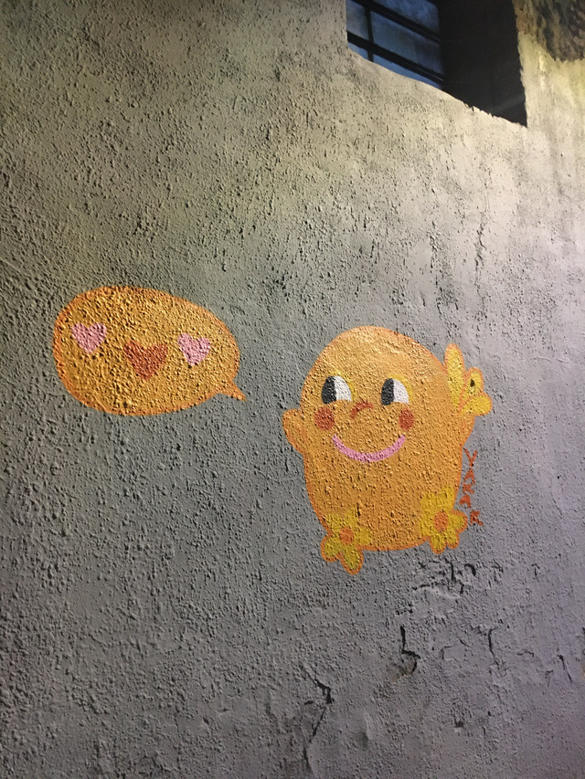
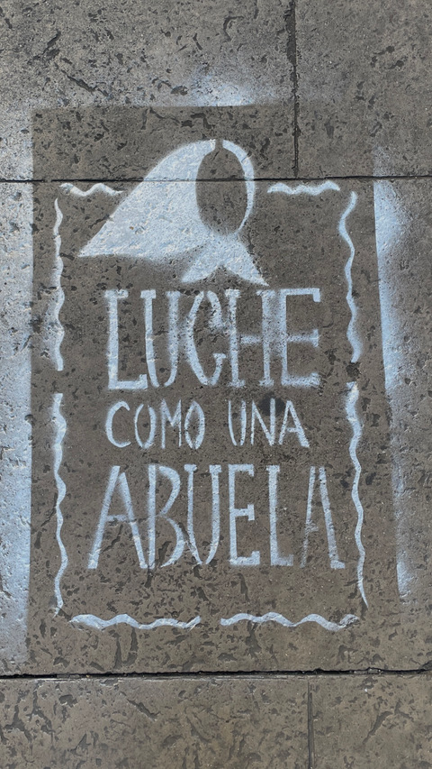
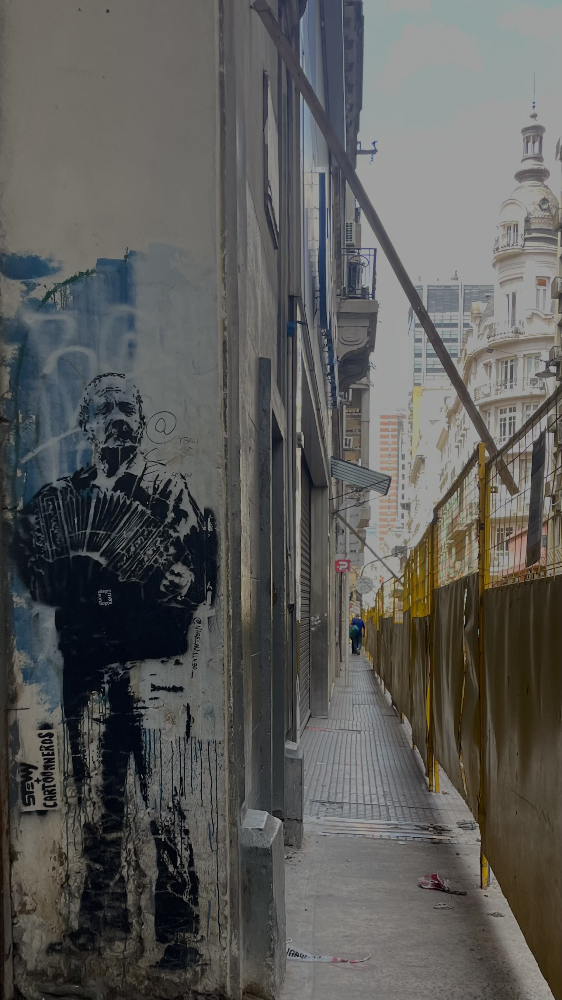
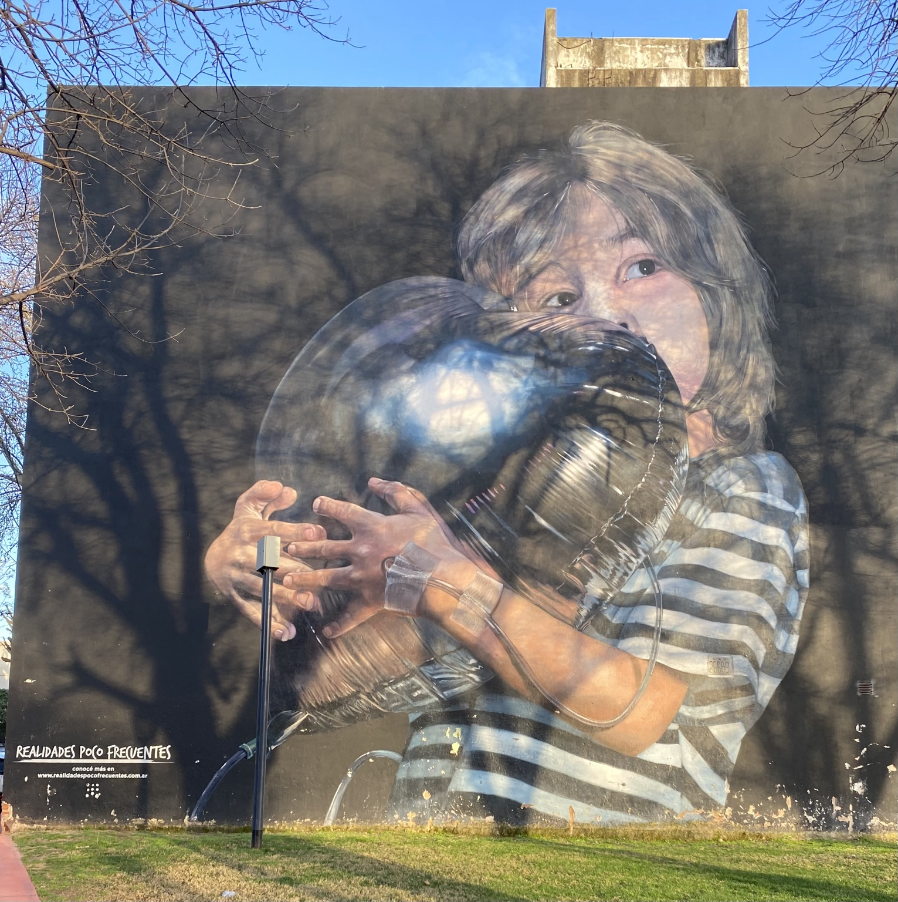
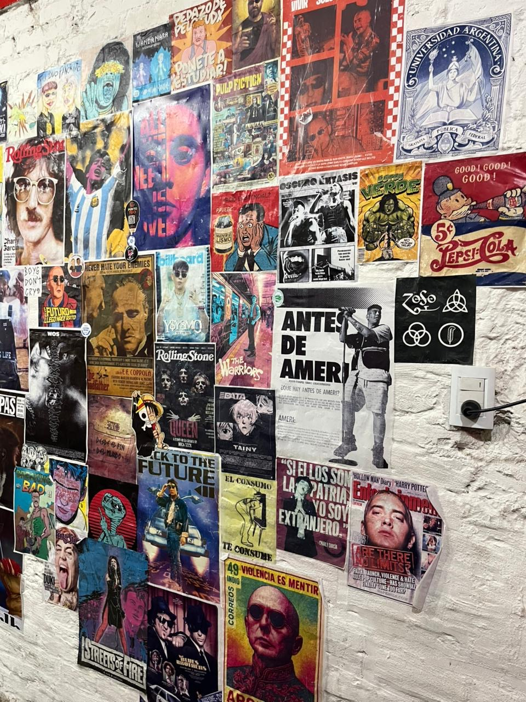
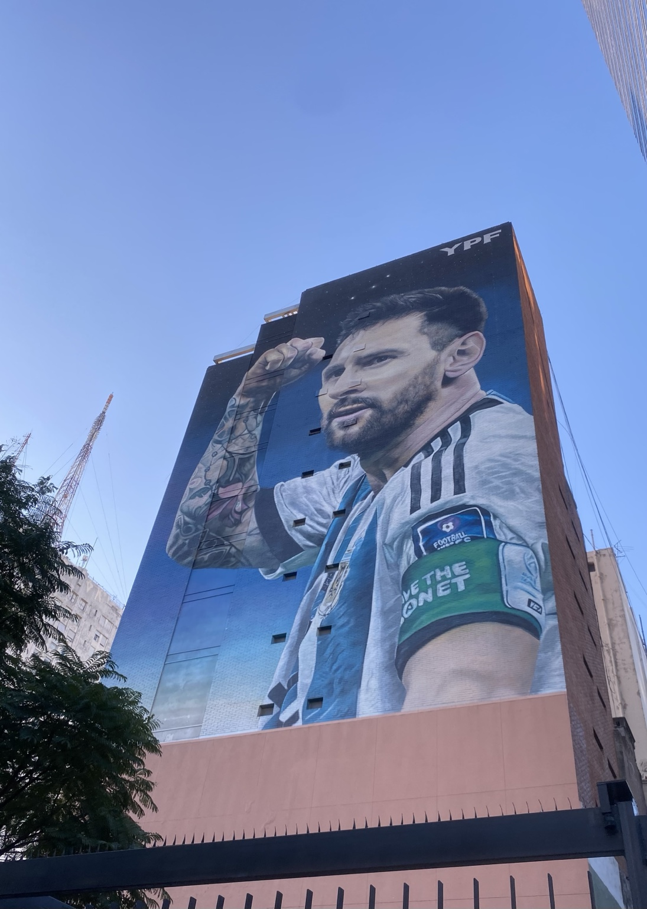
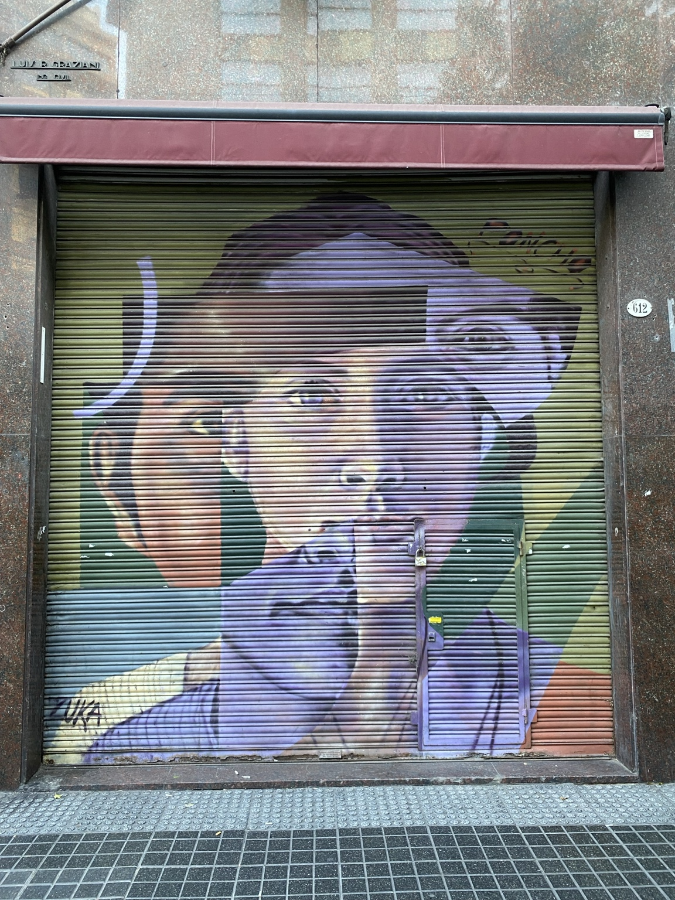
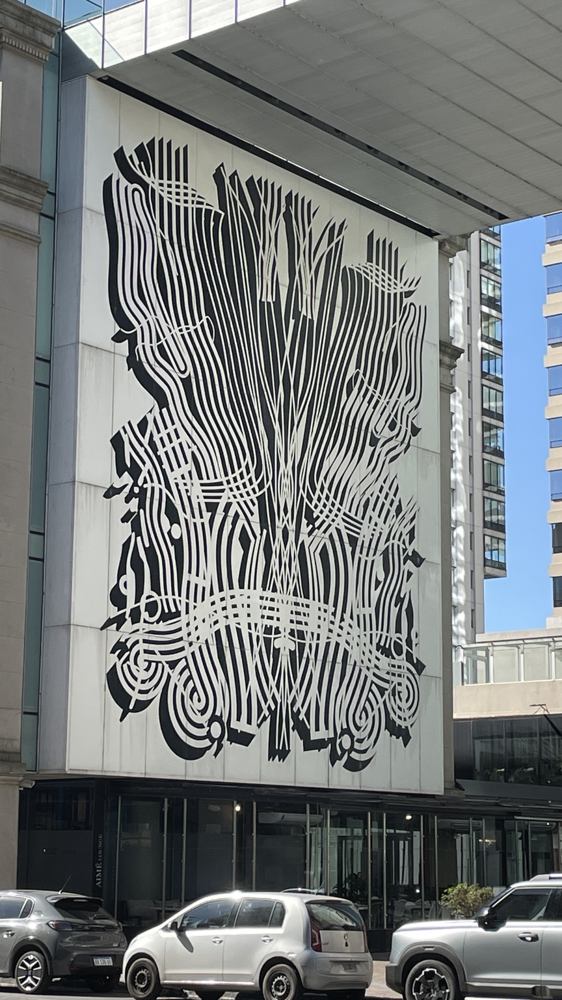

Arte en la facultad
Una combinación de grafitis, dibujos y stickers que intervienen una estructura de hormigón.
Ver másGalería de grafitis y arte urbano
Mi nombre es Lara Trinidad Alonso y esta galería reúne fotografías propias de distintas expresiones de arte urbano.
La selección incluye murales, grafitis, stencils, collages e intervenciones encontradas en distintos espacios.
El objetivo es mostrar cómo estas obras aparecen en lugares cotidianos y pasan a formar parte del paisaje urbano.

Las paredes, persianas, fachadas y otros espacios pueden convertirse en soportes para imágenes, mensajes y formas de expresión muy diferentes.
Una combinación de grafitis, dibujos y stickers que intervienen una estructura de hormigón.
Ver más
Un mural realizado con tiza inspirado en la Selección Argentina y sus jugadores.
Ver más
Un collage de imágenes, frases y mensajes que reúne distintas expresiones colectivas.
Ver más
Un pequeño personaje colorido acompañado por un globo de diálogo con corazones.
Ver más
Un stencil que combina una frase con el símbolo del pañuelo blanco.
Ver más
Un mural en blanco y negro dedicado al músico y compositor argentino.
Ver más
Un mural de gran escala protagonizado por una figura y un recipiente transparente.
Ver más
Una composición de afiches e ilustraciones con referencias a la música, el cine y la cultura popular.
Ver más
Un retrato de gran escala de Lionel Messi con la camiseta de la Selección Argentina.
Ver más
Un retrato pintado sobre una persiana metálica que aprovecha toda su superficie.
Ver más
Una intervención en blanco y negro formada por líneas que se cruzan y generan distintas figuras.
Ver más